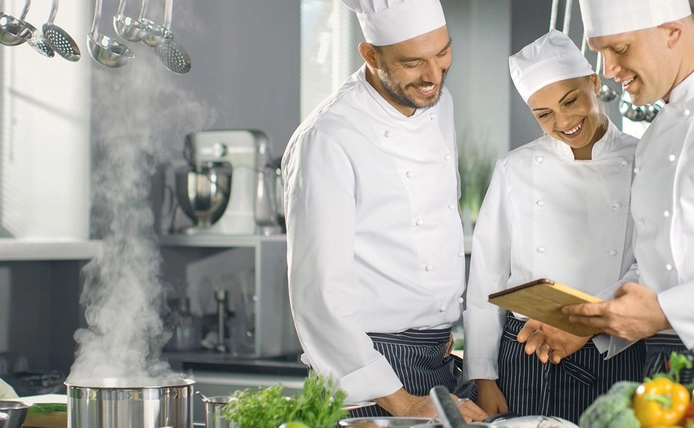

Platos creados con identidad y creatividad.
SABOR
SABOR, CREATIVIDAD
LA COCINA DE ADRIANA hecha para ti.
Una propuesta gastronomica donde la creatividad, la técnica y los ingredientes se encuentran para transformar cada plato en una experiencia memorable.
01
IMAGEN PRINCIPAL
DEL CLIENTE
Dedicación en cada preparación.
Saborers que buscan sorprender

SOBRE LA CHEF
UNA PASIÓN QUE COMIENZA EN LA COCINA.
La gastronomia es una forma de contar historias. cada ingrediente, cada técnica y cada detalle hacen parte de una propuesta creada para despertar los sentidos y convertir una comida en un momento especial.
ADRIANA nace de la Pasión por crear, experimentar y descubrir nuevas formas de disfrutar la cocina. →RESERVAS EVENTOS EXPERIENCIAS